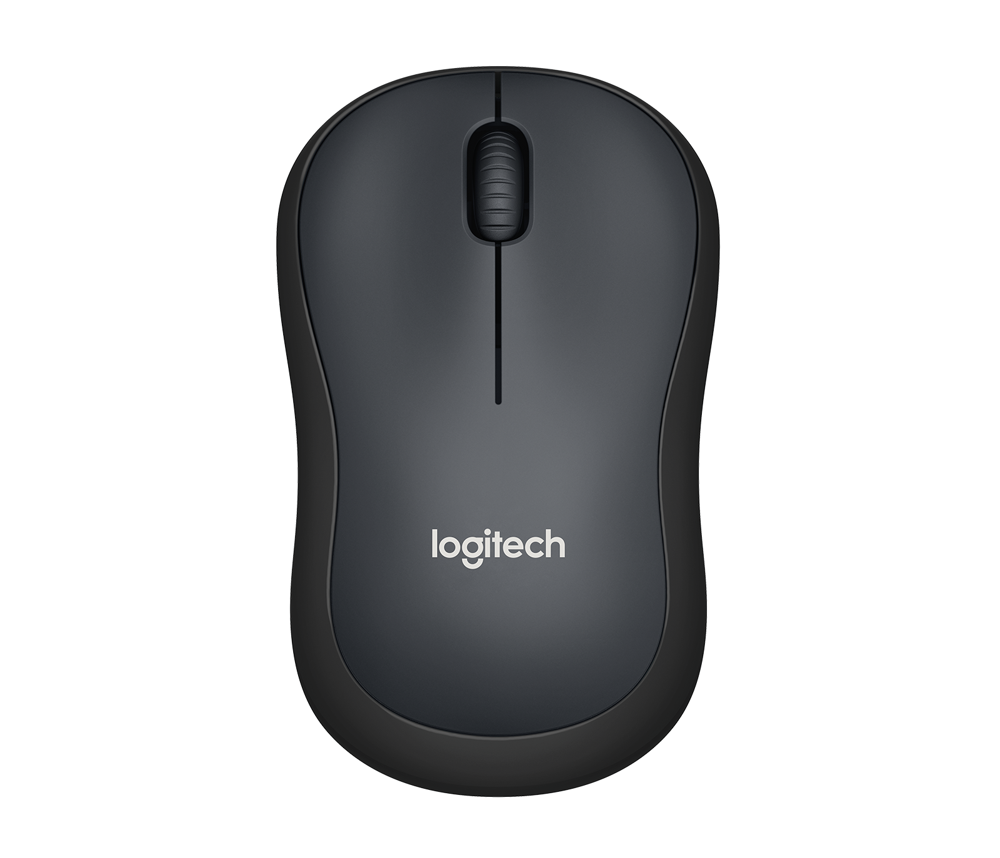

Test Image-
Output On Wolfram Mode -remote control
Output On MobileNet - computer keyboard
Result- MobileNet identified correctly
Test Image-
Output On Wolfram Mode - computer mouse
Output On MobileNet - computer mouse
Result- Both Identified correctly
Test Image-
Output On Wolfram Mode - laptop
Output On MobileNet - desktop computer
Result- Walfram identified correctly
Test Image-
Output On Wolfram Mode - switch
Output On MobileNet - mobile phone
Result- MobileNet identified correctly
Test Image-
Output On Wolfram Model - house
Output On MobileNet - castle
Result- Both identified correctly